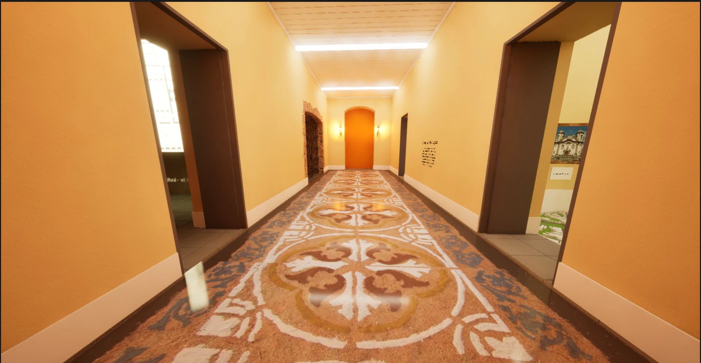
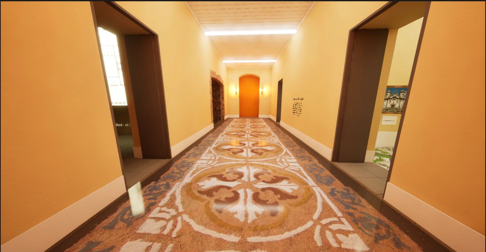

vsrc_ dev
Intro
Welcome to the architecture section.
In this page you'll find an overview of my projects and thesis. Each one of them has it's own dedicated page with more details.
Thesis
My thesis sure is something to talk about.
First of all is it being amongst the realm of patrimonial architecture and game development. Two distinct things i never imagined i would join myself.
The goal was to make something modern, interactive and aimed at younger age groups.
All while preserving, claimimng and respecting the old.
It was Developed using Archicad, Blender and Unreal Engine 5.
You can find more details in the thesis page.
Here is a quick peak in some of the product's (aka - game) content:

 

Mainframe
Mainframe is a project where the goal was to create something like neruro sama. An AI powered twitch vtuber.
It's main purpose was to entertain myself with an AI assistant that has a 3D model, animations, gestures and lipsync.
The "backend" of it was written in python and used ollama library. the 3D model part was made in Unity and interfaced with the main script through a web socket.
I plan on making a pretty interface to use it as an app or turn it into a Newelle (Linunx Ai app) extension.
For now the STT was removed but it is to be added back soon. I had trouble with the TTS voices sounding bad and that's why i sticked with en voices, they tend to sound better.
Jams
I plan on joining gamejams to expand my game portfolio beyond my thesis. The next jam i am interested in is GBJam13, which is a GameBoy themed gamejam. Updates shall take this place and also itch.io's page.